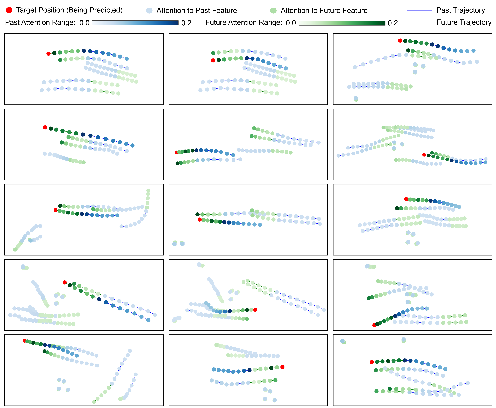
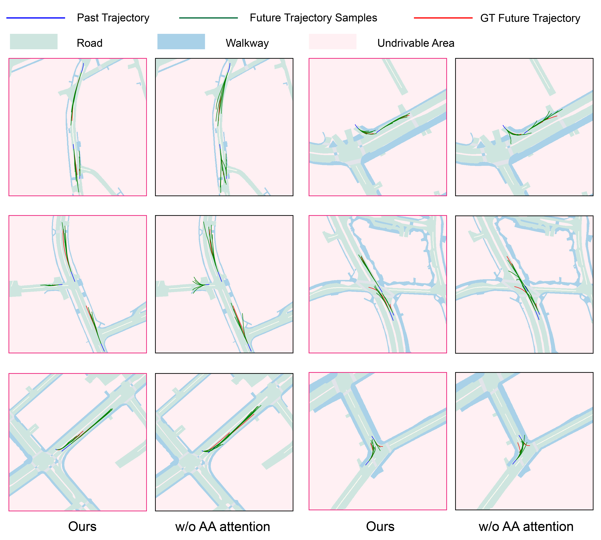

Abstract
Predicting accurate future trajectories of multiple agents is essential for autonomous systems, but is challenging due to the complex interaction between agents and the uncertainty in each agent's future behavior. Forecasting multi-agent trajectories requires modeling two key dimensions: (1) time dimension, where we model the influence of past agent states over future states; (2) social dimension, where we model how the state of each agent affects others. Most prior methods model these two dimensions separately, e.g., they first use a temporal model to summarize features over time for each agent independently and then model the interaction of the summarized features with a social model. This approach is suboptimal since independent feature encoding over either the time or social dimension can result in a loss of information. Instead, we would prefer a method that allows an agent's state at one time to directly affect another agent's state at a future time. To this end, we propose a new Transformer, termed AgentFormer, that simultaneously models the time and social dimensions. The model leverages a sequence representation of multi-agent trajectories by flattening trajectory features across time and agents. Since standard attention operations disregard the agent identity of each element in the sequence, AgentFormer uses a novel agent-aware attention mechanism that preserves agent identities by attending to elements of the same agent differently than elements of other agents. Based on AgentFormer, we propose a stochastic multi-agent trajectory prediction model that can attend to features of any agent at any previous timestep when inferring an agent's future position. The latent intent of all agents is also jointly modeled, allowing the stochasticity in one agent's behavior to affect other agents. Extensive experiments show that our method significantly improves the state of the art on well-established pedestrian and autonomous driving datasets.
Important Note: We have recently noticed a normalization bug in the code and after fixing it, the performance of our method is worse than the original numbers reported in the ICCV paper. For comparision, please use the correct numbers in the updated arXiv version.
Overview

Agent-Aware Attention

Attention Visualization
Trajectory Sample Visualization
Citation
@inproceedings{yuan2021agent,
title={AgentFormer: Agent-Aware Transformers for Socio-Temporal Multi-Agent Forecasting},
author={Yuan, Ye and Weng, Xinshuo and Ou, Yanglan and Kitani, Kris},
booktitle={Proceedings of the IEEE/CVF International Conference on Computer Vision (ICCV)},
year={2021}
}
|
Template adapted from GLAMR. |